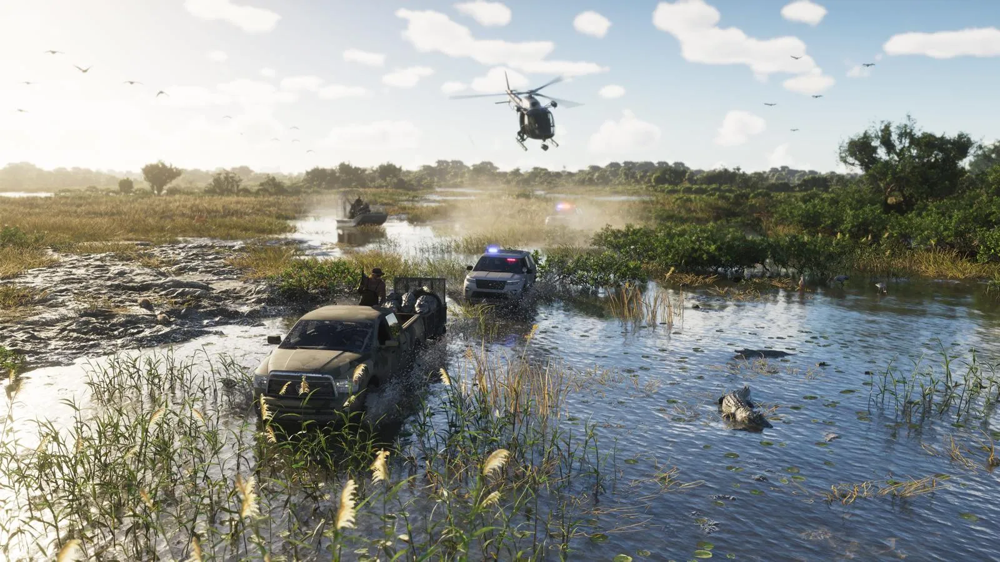
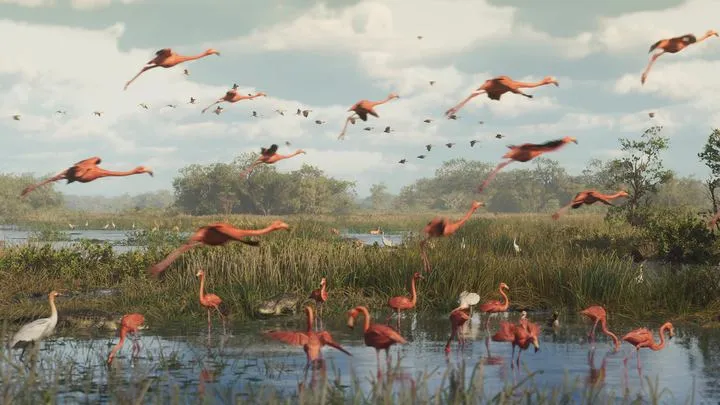
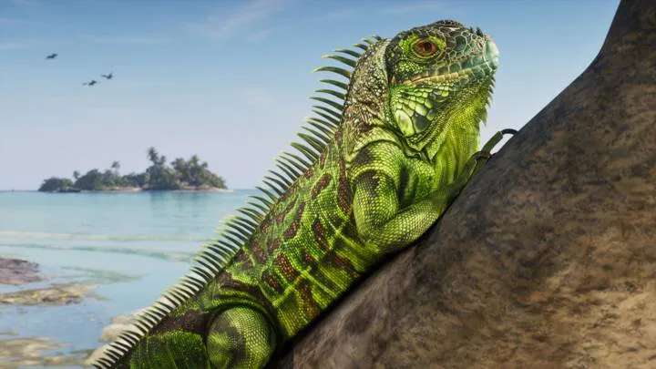
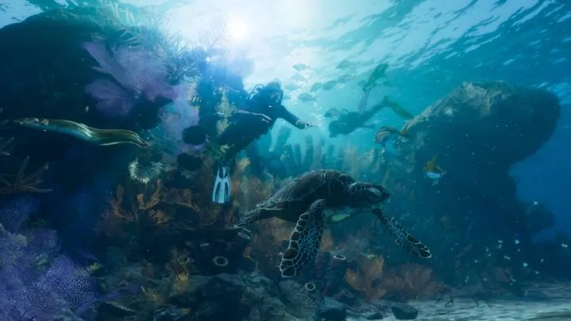
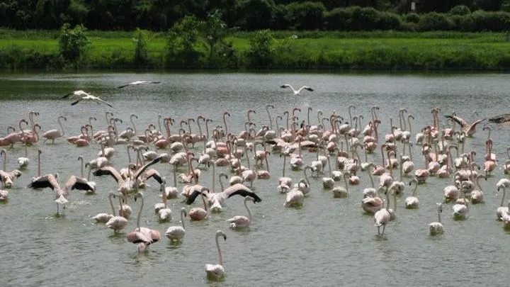
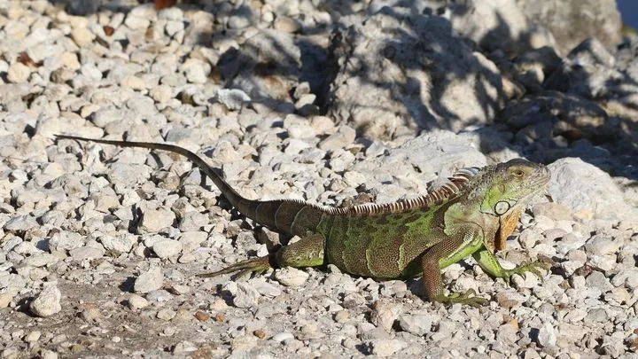

Больше 170 видов животных в GTA 6
Обновлено:

В Леониде больше 170 видов животных — на суше, в воздухе и в море. Так Rockstar сообщила журналу Game Informer 29 сентября 2026 года.
- Аллигатор в Grassrivers.
- Фламинго в трейлере 1.
- Зелёная игуана в Кис.
- Морская черепаха у рифа.
Подробно
По данным Game Informer, часть видов раньше не появлялась ни в одной игре Rockstar. Среди местных животных Флориды в игре — фламинго, ламантины, пеликаны и аллигаторы. Есть и инвазивные виды — те, что во Флориде завезены человеком: зелёные игуаны, жабы-аги, одичавшие кошки и макаки-резусы.
Rockstar отдельно проработала внешность животных: переливающиеся и светящиеся покровы, полупрозрачность, разные типы перьев, новая система шерсти и меха.
Некоторые животные помечены как Rare (редкие), Discoverable (обнаруживаемые) и Legendary (легендарные) — их можно выслеживать. Каких именно животных это касается, Rockstar держит в секрете. По словам Роба Нельсона (интервью IGN), из Red Dead Redemption 2 вернулось изучение животных — его можно собирать в коллекцию. А в материале Edge описан случай: собака гонится за игроком, если он угрожал её хозяину.
Животные Флориды: что попало в игру
| Группа (Game Informer) | Примеры | Реальная Флорида |
|---|---|---|
| Местные | Фламинго, ламантины, пеликаны, аллигаторы | Все — коренные жители штата |
| Инвазивные | Игуаны, жабы-аги, одичавшие кошки, макаки-резусы | Все четыре — реальные «пришельцы» Флориды |
| Редкие, «открываемые», легендарные | Rare / Discoverable / Legendary | Система поиска, как охота за легендарными зверями в RDR 2 |
Флорида — один из самых богатых штатов США по разнообразию дикой природы и одновременно «столица» инвазивных видов: питоны в Эверглейдс, игуаны на юге, жабы-аги, ядовитые для собак, и даже обезьяны в лесах у реки Силвер. То, что Rockstar включила в игру именно инвазивные виды, — тонкая и очень флоридская деталь.
Частые вопросы
Сколько животных в GTA 6?
Больше 170 видов, по данным Game Informer.
Почему 170 видов — это много
В GTA 5 было около 20 видов животных, в Red Dead Redemption 2 — больше 200. GTA 6 со своими 170+ видами ближе к RDR 2, чем к городской GTA 5: Rockstar превратила Леониду в настоящий заповедник. Это логично — Флорида один из самых богатых по разнообразию природы штатов США: болота, мангры, коралловые рифы, сосновые леса и всё это на одном полуострове.
Местные и «пришельцы»
Самая интересная деталь из Game Informer — разделение на местные и инвазивные виды. Флорида — мировая «столица» инвазивных животных: из-за торговли экзотикой, портов и тёплого климата здесь прижились сотни чужих видов. Rockstar выбрала самые узнаваемые:
| Вид в игре | Откуда во Флориде |
|---|---|
| Зелёная игуана | Из Центральной Америки, с 1960-х |
| Жаба-ага | Из Южной Америки, завозили для борьбы с вредителями сахарного тростника |
| Одичавшие кошки | Бывшие домашние |
| Макака-резус | Выпущены в 1938 году у реки Силвер ради туристов |
| Бирманский питон (по другим материалам) | Сбежавшие и выпущенные питомцы |
Редкие, «открываемые» и легендарные
По данным Game Informer, у животных есть категории Rare, Discoverable и Legendary. Похожая система была в Red Dead Redemption 2 — там игроки неделями искали легендарного медведя или белого бизона. Значит, в GTA 6 будет охота за редкими зверями и, вероятно, награды за неё.
Страницы видов: аллигаторы, фламинго, игуаны, олени и пума, морские животные, собаки.
Кадры



Где посмотреть
Таймкоды — чтобы найти момент в официальном видео Rockstar.
| Где | Что в кадре |
|---|---|
| Официальный скриншот Grassrivers | Аллигатор в болотах |
| Трейлер 1, 0:21 | Стая фламинго над болотом |
| Официальный скриншот Leonida Keys | Зелёная игуана на камнях |
| Официальный скриншот Leonida Keys | Морская черепаха и коралловый риф |
По данным превью
Это рассказали журналисты, которые видели игру до релиза. Rockstar официально подробности не подтверждала.
В Леониде будет больше 170 видов животных — на суше, в воздухе и в море.
Game Informer, 29.09.2026
Изучение животных вернулось из RDR 2 как механика коллекционирования.
IGN, интервью с Робом Нельсоном (октябрь 2026)
Что пока неизвестно
- Полный список видов и сколько из них можно встретить в каждом регионе.
- Какие животные редкие и легендарные.
- Есть ли в игре зоопарк — в открытых материалах Rockstar пока не подтверждено.
Больше 170 видов животных и реальность

vs
vs
 vs
vsКадры и названия: Rockstar Games — трейлеры GTA VI, «Расширенный показ» (An Extended Look), официальные скриншоты. После релиза 19 ноября 2026 года дополним страницу данными из игры.
Каждый день — одно сравнение: кадр игры рядом с реальным фото. Подписывайтесь:
YouTubeInstagramTikTok